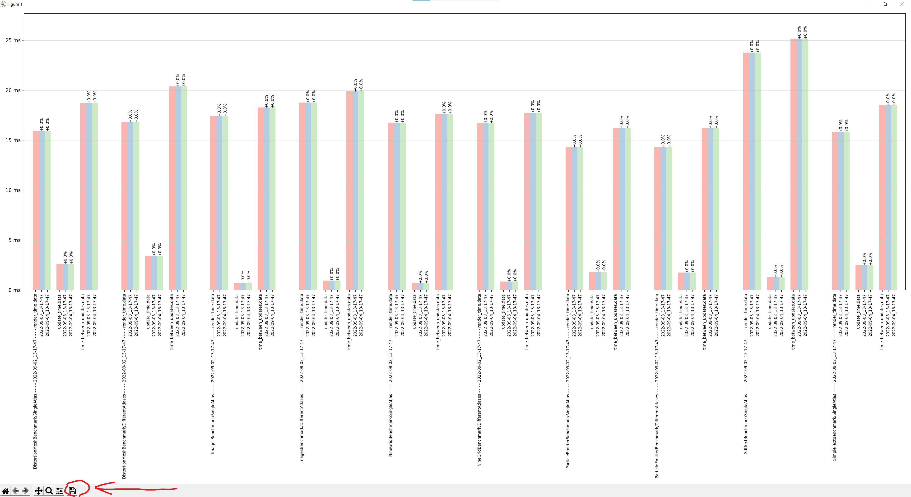

Синтетические бенчмарки Сitrus
В движке есть встроенные инструменты для замеров производительности вне игровых проектов, так называемые синтетические бенчмарки.
В инструментарий входят:
Сцены для синтетических тестов с различными игровыми объектами (Image, TiledImage, SimpleText и так далее)
Логгеры для различных метрик в Lime - GPU, CPU (Render, Update, Vsync)
Cкрипты на языке Python для построения графиков
Скрипты RemoteScripting для сбора метрик
Сбор метрик
Запуск сбора метрик осуществляется через скрипты RemoteScripting в редакторе Tangerine. Скрипты находятся в проекте Examples\Tests Соответственно для мобильных платформ на устройствах должны быть соответствующие билды проекта Tests.
Запуск скриптов для сбора метрик происходит также, как и обычный запуск скриптов (см. RemoteScripting)
ВАЖНО! Для корректной работы скриптов необходимо открыть Inspector и заполнить поля, выбрав любой виджет на сцене.
После того, как устройство было подключено к хосту, необходимо запустить скрипты в определенном порядке:
Calculate device performance profile - выбор целевого количества кадров в секунду. Создается файл профиля, в котором указано, сколько копий каждой сцены необходимо, чтобы достичь выбранного результата. Профиль сохраняется по пути
\Examples\Tests\StorageForRemoteScripting\в форматеjsonRun performance test - запуск бенчмарков. В качестве параметра необходимо указать сгенерированный ранее профиль. Из параметров - интервал замера производительности, интервал паузы между сценами и количество повтора интервалов. Результаты бенчмарка будут сохранены на подключенном устройстве.
Download performance test results - скачивает результаты прогона бенчмарков в директорию
\Examples\Tests\StorageForRemoteScriptingRemove performance test results - удаляет результаты прогона бенчмарков с устройства.
Собранные метрики в бинарном формате хранятся по пути\Examples\Tests\StorageForRemoteScripting и имеют структуру вида %дата_прогона%\%бенчмарк%\%сцена%
Построение графиков
Скрипты для построения графиков находятся по пути \Examples\Tests\Charts
Для запуска скриптов необходим Python3 (3.6). Все необходимые зависимости можно установить через pip -r requirements.txt
Результаты для каждой сцены поделены на SingleAtlas и DifferentAtlases - оптимизированная и неоптимизированная версия текстурного атласа.
Существует 2 вида графиков:
гистограмма (
draw_histogram.py)столбчатая диаграмма (
draw_bars_for_all.py)
Гистограмма
Конфигурация:
scene_a = '2022-09-02_13-17-47\\ImagesBenchmark\\SingleAtlas'
scene_b = '2022-10-04_15-18-47\\ImagesBenchmark\\SingleAtlas'
device_name = "kek"
profile_name = "Profile for kek 55 fps.json"
Столбчатая диаграмма:
Конфигурация:
device_name = "msi"
profile_name = "Profile for msi 55 fps.json"
launch_times = (
'2022-09-02_13-17-47',
'2022-09-03_13-17-47',
'2022-09-04_13-17-47',
)
scene_names = (
"DistortionMeshBenchmark/SingleAtlas",
"DistortionMeshBenchmark/DifferentAtlases",
"ImagesBenchmark/SingleAtlas",
"ImagesBenchmark/DifferentAtlases",
"NineGridBenchmark/SingleAtlas",
"NineGridBenchmark/DifferentAtlases",
"ParticleEmitterBenchmark/SingleAtlas",
"ParticleEmitterBenchmark/DifferentAtlases",
"SdfTextBenchmark/SingleAtlas",
"SimpleTextBenchmark/SingleAtlas",
)
У столбчатой диаграммы есть 2 режима отображения:
сравнения средних показателей по конкретной сцене (
compare_mean_for_scene)сравнение средних показателей по конкретной метрике (
compare_mean_for_metric)
Для использование конкретного метода нужно раскомментировать нужную строчку в скрипте:
compare_mean_for_metric(target_metric, filtered_scenes, reference_time_for_comparison)
compare_mean_for_all_scenes(scenes, reference_time_for_comparison)
Сохранение диаграммы
Для сохранения диаграммы достаточно нажать выделенную кнопку и выбрать, куда сохранить.
